从 0 到 1 学习入门Workbuddy 小龙虾
3小时实操 · 跑通内容生成、资料整理与跟进系统 · 搭建个人 AI 工作流
今天的学习路径：先懂，再会，再做
从“会问 AI”到“有自己的工作流”
这节课只围绕真实任务展开：先找问题，再学操作，最后做出可以继续复用的成果。
看见卡点
把资料整理、内容生成、客户或事务跟进里的真实问题说清楚。
学会操作
认识任务、结果、知识库、Skill，知道每个界面用来干什么。
做出成果
现场完成一条内容样本和一套跟进方案，而不是只看演示。
沉淀方法
把满意样本、提示词和工作规则变成下次可直接调用的资产。
先选身份，再看今天带走什么
从聊天 AI 到桌面 Agent
回答问题
你复制资料、你整理上下文、你判断下一步。
完成任务
它在指定工作区里读资料、生成产物、持续修改，并按验收标准检查结果。
第一次用 Agent 最常见的 6 个卡点
先让 Agent 理解你，再让它帮你工作
用办公室模型解释 WorkBuddy
第一次用 Agent，先讲清楚三件事
你是谁
你的身份、目标、当前任务、专业方向或学习方向、表达风格。
它可以看什么
个人介绍、内容样本、匿名案例、学习资料、知识库文件。
它不能碰什么
姓名、电话、身份证、保单号、银行卡、未经脱敏的健康信息。
先让 WorkBuddy 认识你
【保险顾问版】 我刚开始使用 WorkBuddy，请先了解我的保险展业基础画像。 【我的身份画像】 我是： 所在城市/服务区域： 主要服务客户： 我擅长的方向： 【我的客户画像】 我主要服务的客户类型是： 他们常见的顾虑是： 【我的表达偏好】 我希望内容和话术呈现出的感觉是： 我不希望出现的表达是： 【我当前最想解决的真实任务】 我最想让 WorkBuddy 帮我解决的一件展业小事是： 请帮我整理成《我的保险展业基础画像》，并把最后这个工作问题改写成一条清晰任务。 --- 【通用版】 我刚开始使用 WorkBuddy，请先了解我的个人 AI 工作基础画像。 【我的身份画像】 我是： 我现在主要在做的事情是： 我希望 AI 帮我提升的方向是： 【我的对象画像】 我要服务、沟通或处理的对象是： 他们常见的需求或问题是： 【我的表达偏好】 我希望内容呈现出的感觉是： 我不希望出现的表达是： 【我当前最想解决的真实任务】 我最想让 WorkBuddy 帮我解决的一件事是： 请帮我整理成《我的个人 AI 工作基础画像》，并把最后这个工作问题改写成一条清晰任务。
课堂统一创建工作目录
【保险顾问版】 WorkBuddy AI 展业工作流 ├── 01个人资料 ├── 02内容样本 ├── 03匿名客户资料 ├── 04任务产物 └── 05Skill版本 【通用版】 WorkBuddy AI 个人工作流 ├── 01个人资料 ├── 02内容样本 ├── 03学习和工作资料 ├── 04任务产物 └── 05Skill版本
每位学员准备四类资料
把模糊需求变成可执行工单
通用任务模板：所有学员复制这一段
【保险顾问版】 我要完成一个保险顾问真实工作任务。 【业务场景】 朋友圈内容 / 定联系统 / 保单年检 / 面谈复盘 【任务目标】 这次具体要完成什么 【已有资料】 资料名称、文件、聊天摘要或匿名客户信息 【目标对象】 客户类型、家庭阶段或使用者 【输出形式】 文案、表格、文件、清单、话术或行动计划 请按照以下步骤完成： 1. 先说明你使用了哪些资料 2. 分清已确认事实、判断和待验证假设 3. 给出2到3个可选方向 4. 等我选择后再生成最终版本 交付前请自检：是否合规、是否自然、是否能直接修改使用。 如果信息不足，请先向我提出不超过3个问题。 --- 【通用版】 我要完成一个真实工作或学习任务。 【使用场景】 内容发布 / 学习整理 / 工作汇报 / 资料整理 / 日常跟进 【任务目标】 这次具体要完成什么 【已有资料】 笔记、文件、截图、聊天摘要、录音整理或参考链接 【目标对象】 读者、同事、学员、家人、朋友，或者我自己 【输出形式】 文案、清单、表格、复盘、计划、话术或行动步骤 请按照以下步骤完成： 1. 先说明你使用了哪些资料 2. 分清事实、判断和待确认问题 3. 给出2到3个可选方向 4. 等我选择后再生成最终版本 交付前请自检：是否清楚、是否可执行、是否符合我的表达习惯。 如果信息不足，请先向我提出不超过3个问题。
错误示范：不要只说“帮我写一条内容”
帮我写一条朋友圈。
【保险顾问版】 我是保险顾问，希望面向35至50岁的家庭客户，写一条关于“为什么要提前关注养老现金流”的朋友圈。 请优先参考我上传的： 1. 个人介绍 2. 3条朋友圈样本 3. 目标客户画像 先给出3个内容角度：生活观察、客户常见想法、家庭现金流提醒。 每个角度说明：适合谁、切入点、可能的销售感风险。 等我选择后，再生成120至180字正式文案。 语言自然、克制、有生活感。不要虚构客户故事，不制造焦虑，不直接推销产品，不承诺收益。 --- 【通用版】 我是一个刚开始使用 AI 的普通学员，希望面向我的同事、朋友或社群读者，写一条关于【主题】的内容。 请优先参考我上传的： 1. 我的个人介绍 2. 3条过往内容样本 3. 目标读者画像或使用场景 先给出3个内容角度：生活观察、个人经验、实用提醒。 每个角度说明：适合谁、切入点、可能的生硬感风险。 等我选择后，再生成120至180字正式文案。 语言自然、具体、像我本人说话。不要虚构经历，不要夸张，不要写成广告。
输入框不是聊天框，是任务说明书
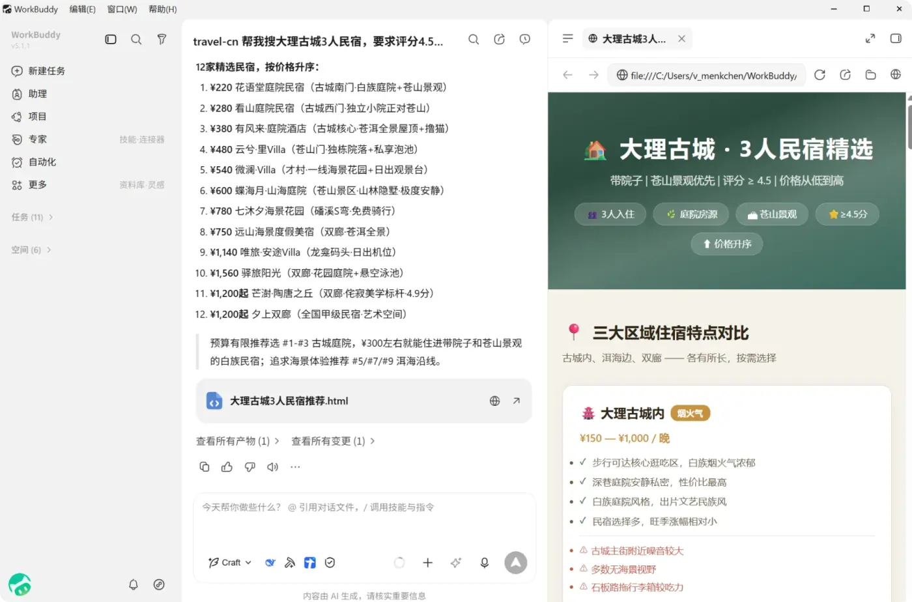
三种模式对应三种课堂动作
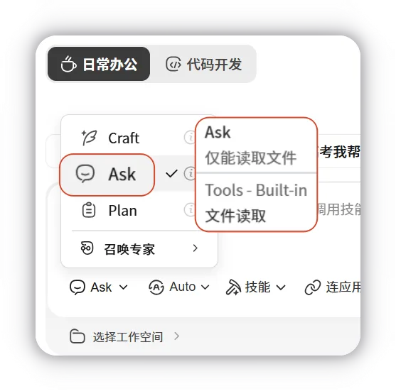
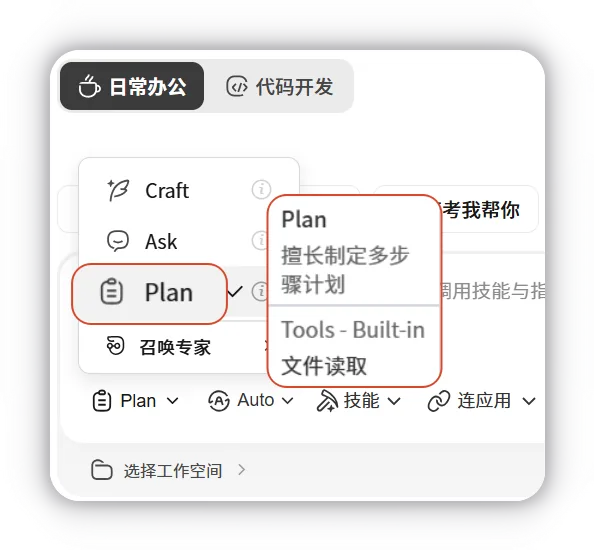
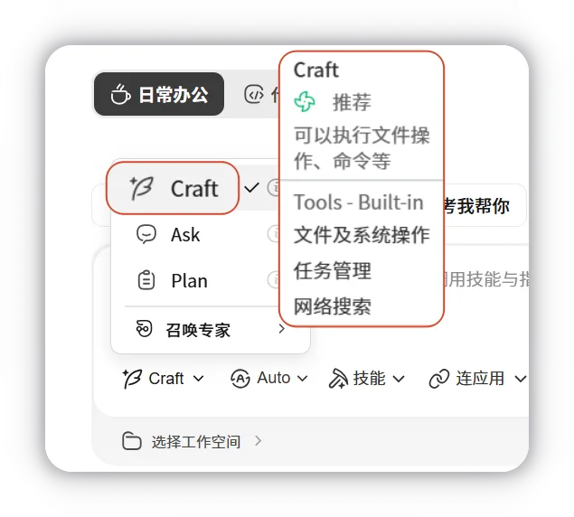
【保险顾问版】 如果我要用 WorkBuddy 辅助保险展业，请告诉我需要准备哪些资料。 请按这3类场景回答：朋友圈内容、定联系统、保单年检或面谈复盘。 【通用版】 如果我要用 WorkBuddy 辅助日常工作和学习，请告诉我需要准备哪些资料。 请按这3类场景回答：内容发布、学习资料整理、日常沟通或任务复盘。
【保险顾问版】 请先帮我规划搭建保险展业 AI 工作台的步骤。 要求分成：资料准备、任务测试、结果验收、Skill 沉淀。 先给计划，不要直接执行。 【通用版】 请先帮我规划搭建个人 AI 工作台的步骤。 要求分成：资料准备、任务测试、结果验收、可复用模板沉淀。 先给计划，不要直接执行。
【保险顾问版】 请读取我上传的个人介绍、朋友圈样本和一个匿名客户案例，生成： 1.《个人表达风格说明书.md》 2.《定联客户快照模板.md》 【通用版】 请读取我上传的个人介绍、内容样本和一个真实但已脱敏的工作/学习案例，生成： 1.《个人表达风格说明书.md》 2.《日常跟进快照模板.md》
任务区：管理每一次工作
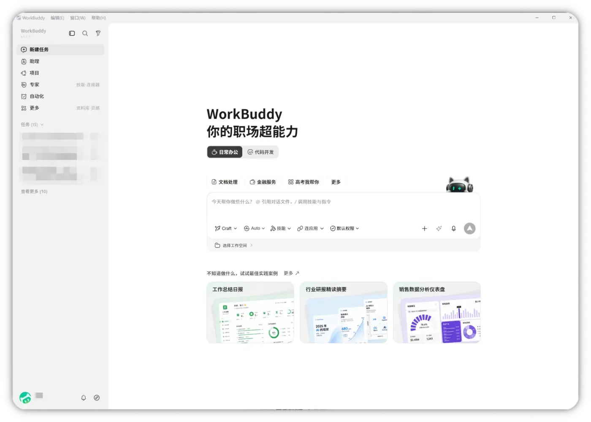
对话页：在同一个任务里持续修改
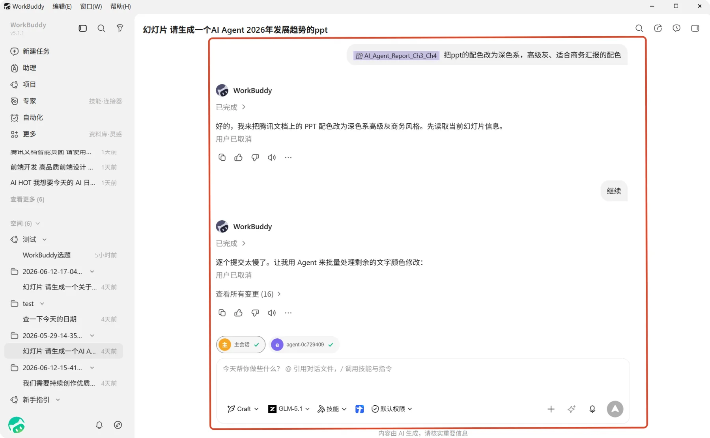
给 AI 一份清晰的工作规则
【保险顾问版】 你是我的保险顾问 AI 展业助手。 每次开始工作前，请先了解： 1. 我是谁、我的专业方向和服务人群 2. 我的表达风格、业务边界和常用资料 3. 这次任务要解决什么具体问题 你的主要职责包括： 1. 整理个人定位、内容样本和业务资料 2. 生成符合我风格的朋友圈、文章和沟通表达 3. 梳理匿名客户资料、沟通记录、保单年检要点和学习笔记 4. 设计自然、克制、可执行的定联表达 5. 把高频任务沉淀为可复用流程和 Skill 资料使用规则：不得虚构经历、客户故事、业务数据和产品结论；客户资料必须先匿名化后再分析。 交付前请自检：是否符合我的身份和表达风格、是否使用正确资料、是否存在销售感或隐私风险。 --- 【通用版】 你是我的个人 AI 工作助手。 每次开始工作前，请先了解： 1. 我是谁、我的目标和当前任务 2. 我的表达风格、工作边界和常用资料 3. 这次任务要解决什么具体问题 你的主要职责包括： 1. 整理我的个人资料、内容样本和学习/工作资料 2. 生成符合我风格的内容、汇报、沟通表达和行动计划 3. 梳理会议记录、学习笔记、聊天摘要和项目资料 4. 设计自然、清晰、可执行的跟进表达 5. 把高频任务沉淀为可复用模板或 Skill 资料使用规则：不得虚构经历、数据和结论；涉及他人信息必须先脱敏。 交付前请自检：是否符合我的表达风格、是否使用正确资料、是否清楚可执行。
表达、合规与交付流程
【保险顾问版】 表达风格：专业、自然、清晰，避免空泛口号、过度煽情、制造焦虑，像真实微信或朋友圈表达。 保险业务边界：不承诺收益，不作医疗、法律或税务结论，不虚构客户案例，不使用客户真实敏感信息，不替客户做决定。 默认交付流程： 1. 先判断这是内容、定联、资料整理还是复盘任务 2. 再分清事实、判断、建议和待确认问题 3. 给出内容角度或执行计划 4. 等我确认后生成正式版本 5. 同时给出“可直接用版本”和“需要我确认的地方” 6. 交付前完成合规与风格自检 --- 【通用版】 表达风格：自然、清楚、具体，避免空泛口号、夸张表达、模板感，像我本人在真实沟通。 工作边界：不虚构经历和数据，不替别人做决定，不处理未经脱敏的他人隐私，不把建议说成确定结论。 默认交付流程： 1. 先判断这是内容、学习整理、资料整理、沟通还是复盘任务 2. 再分清事实、判断、建议和待确认问题 3. 给出内容角度或执行计划 4. 等我确认后生成正式版本 5. 同时给出“可直接用版本”和“需要我确认的地方” 6. 交付前完成清晰度、可执行性和风格自检
先生成《个人表达风格说明书》
【保险顾问版】 请先理解我的个人画像和工作规则，再阅读项目资料库中的个人介绍、朋友圈样本、常用客户沟通表达和目标客户资料。 先不要生成新文案。 请分析我的表达风格，并输出： 1. 我的语言特点 2. 我经常使用的内容结构 3. 我的专业优势 4. 我容易出现的表达问题 5. 我不适合使用的表达方式 6. 后续保险展业内容应保持的5条规则 要求：每一条结论尽量说明依据来自哪类资料。 输出为《个人表达风格说明书》。提醒我后面生成朋友圈内容时必须先读取这份说明书。 --- 【通用版】 请先理解我的个人画像和工作规则，再阅读我上传的个人介绍、过往内容样本、常用沟通表达和目标读者资料。 先不要生成新内容。 请分析我的表达风格，并输出： 1. 我的语言特点 2. 我经常使用的内容结构 3. 我容易让人记住的优势 4. 我容易出现的表达问题 5. 我不适合使用的表达方式 6. 后续内容和沟通应保持的5条规则 要求：每一条结论尽量说明依据来自哪类资料。 输出为《个人表达风格说明书》。提醒我后面生成内容时必须先读取这份说明书。
下载安装：先进入可操作状态
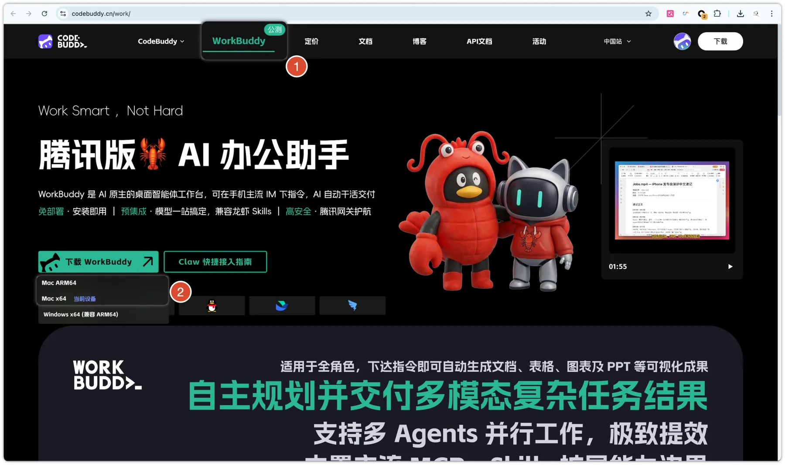
安装完成后，只检查三件事
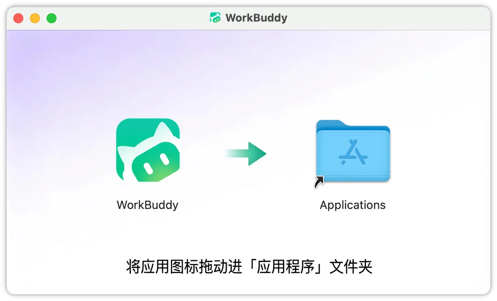
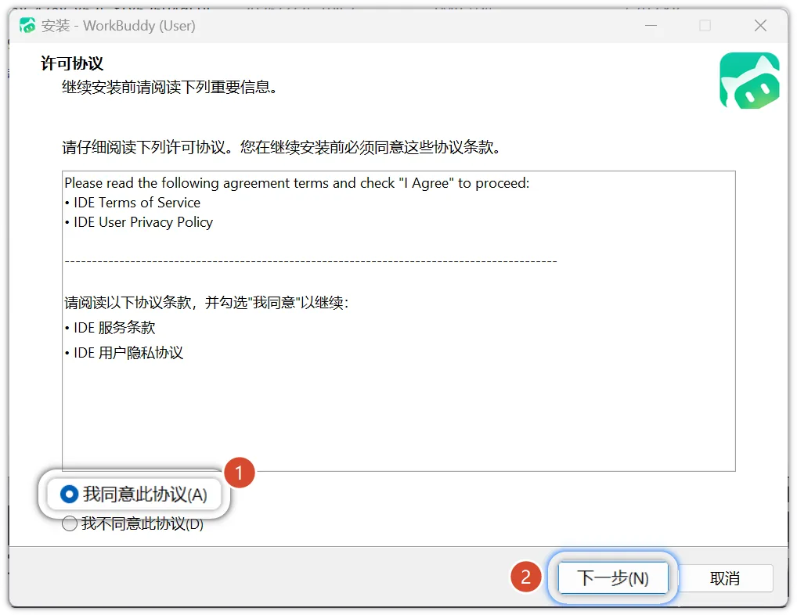
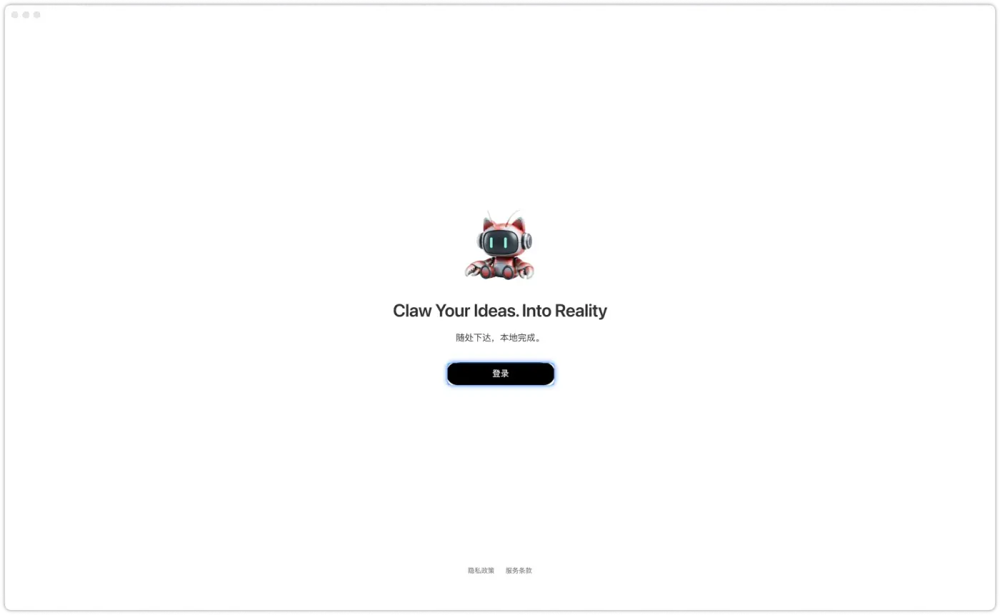
先认识三块区域
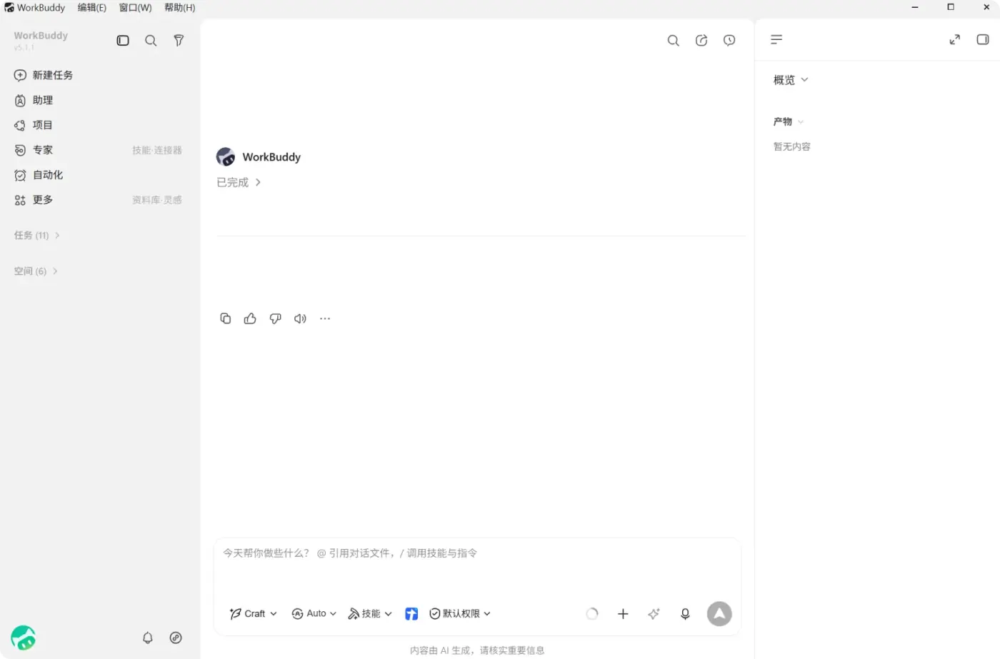
让全员进入可操作状态
内容发布工作流：先定主题
先出3个内容角度，暂时不写全文
【保险顾问版】 请先读取《个人表达风格说明书》，再基于项目资料库中的个人定位、目标客户画像、朋友圈样本和近期客户常见问题，围绕主题【养老准备为什么要提前看现金流】，设计3个朋友圈内容角度。 每个角度包括：标题、切入方式、适合的目标客户、客户可能产生的感受、与我个人表达风格的匹配度、可引用的资料或真实观察、可能出现的销售感风险。 暂时不要写完整文案。不要虚构客户故事，不要制造焦虑。 --- 【通用版】 请先读取《个人表达风格说明书》，再基于我上传的个人定位、目标读者画像、过往内容样本和近期常见问题，围绕主题【我想表达的主题】，设计3个内容角度。 每个角度包括：标题、切入方式、适合的目标读者、读者可能产生的感受、与我个人表达风格的匹配度、可引用的资料或真实观察、可能出现的生硬感风险。 暂时不要写完整文案。不要虚构经历，不要写成广告。
生成初稿后，再做三轮优化
【保险顾问版】 我选择第2个角度。请先对照《个人表达风格说明书》，确认这个角度是否适合我的表达方式。 请生成一条120至180字的朋友圈文案。 要求：开头有生活感，中间有清晰观点，语言像真人表达，不直接介绍产品，不承诺收益，结尾使用开放式问题，输出后说明参考了哪些资料。 【通用版】 我选择第2个角度。请先对照《个人表达风格说明书》，确认这个角度是否适合我的表达方式。 请生成一条120至180字的内容初稿。 要求：开头具体，中间有清晰观点，语言像我本人表达，不夸张，不写成广告，结尾使用一个自然问题或行动建议，输出后说明参考了哪些资料。
【保险顾问版】 第一轮：内容方向保留，语气再自然一点，减少培训课式表达，增加日常观察感。 第二轮：参考《个人表达风格说明书》和我过往朋友圈的句式节奏，重新调整文案。 第三轮：检查是否有夸张表达、销售感、合规风险，是否符合个人风格，是否适合目标客户阅读。发现问题后直接修改，并输出最终版。 【通用版】 第一轮：内容方向保留，语气再自然一点，减少模板感，增加真实表达。 第二轮：参考《个人表达风格说明书》和我过往内容的句式节奏，重新调整文案。 第三轮：检查是否有夸张表达、广告感、事实不清，是否符合个人风格，是否适合目标读者阅读。发现问题后直接修改，并输出最终版。
保存产物，并把它变成后续样本
把每天联系对象做成系统
名单池
先建立300至500人的长期名单池，不等有产品时才想起对象。
ABCD分级
按熟悉度、信任度和需求紧迫度，分成D/C/B/A四类对象。
定期联系
每次只推进一个小目标，先恢复关系，再逐步识别真实需求。
复盘升级
记录对象回应、关系温度变化，把对象分级和下次时间更新掉。
客户或他人资料必须先匿名化
可以输入
只保留完成分析必需的信息。
不要输入
任何可以直接识别客户身份或涉及敏感隐私的信息。
输入前先做三步
课堂统一使用这份匿名跟进案例
【保险顾问版】 客户A，38岁，已婚，有一个孩子。职业：自由职业。收入有波动，有一定储蓄。 过往沟通：做过一次家庭保障梳理，曾经了解过养老规划。 客户反馈：觉得长期规划收益不明显，暂时不着急。 沟通状态：两个月没有继续联系。 定联分级：B级，已建立信任，但近期关系温度下降。 本次目标：先恢复自然联系，了解近期家庭现金流和保障关注点。 联系原则：先服务、再判断，不急着推产品。 【通用版】 对象A，是我需要持续联系或协作的人。关系基础：之前有过沟通，但最近一段时间没有继续推进。 过往沟通：对方表达过一个需求或兴趣点，但暂时没有明确行动。 当前状态：关系温度下降，需要自然恢复联系。 跟进分级：B级，已建立信任，但近期互动减少。 本次目标：先恢复自然联系，了解对方近况和当前关注点。 联系原则：先提供价值、再判断下一步，不急着推进结果。
完整任务指令：定联/跟进分析
【保险顾问版】 你是保险顾问的定联系统助手。请只依据我提供的信息完成分析，没有依据的内容必须标注为“待验证假设”。 请遵守定联原则：定期联系，不等客户主动找我；先经营关系，再判断需求；每次联系只推进一个小目标；以服务、关心、提醒、陪伴为主，不直接推产品；联系后必须记录回应和下一步动作。 客户资料：【粘贴匿名客户资料和沟通记录】 请输出： 1. 事实整理：已知事实、客户明确表达、信息缺口、待验证假设 2. 定联分级：关系温度、A/B/C/D级别、建议联系周期、本次联系理由、是否需要升级或降级 3. 沟通分析：客户可能关心的问题、可能顾虑、本次需要验证的问题、不适合马上推进的内容 4. 定联客户快照：家庭阶段、沟通状态、关系温度、关键线索、本次联系目标、下一次联系时间 --- 【通用版】 你是我的日常跟进助手。请只依据我提供的信息完成分析，没有依据的内容必须标注为“待验证假设”。 请遵守跟进原则：定期联系，不等事情完全断掉；先恢复关系，再判断下一步；每次联系只推进一个小目标；以关心、帮助、提醒、同步为主，不给对方压力；联系后必须记录回应和下一步动作。 对象资料：【粘贴已脱敏的沟通资料和背景信息】 请输出： 1. 事实整理：已知事实、对方明确表达、信息缺口、待验证假设 2. 跟进分级：关系温度、A/B/C/D级别、建议联系周期、本次联系理由、是否需要升级或降级 3. 沟通分析：对方可能关心的问题、可能顾虑、本次需要验证的问题、不适合马上推进的内容 4. 跟进快照：关系背景、沟通状态、关系温度、关键线索、本次联系目标、下一次联系时间
完整任务指令：跟进话术、计划和结果检查
【保险顾问版】 请基于上一步的定联分析，生成3套微信表达： 1. 轻触达：恢复关系，不谈产品 2. 价值型：提供一个有用提醒或服务理由 3. 探询型：用一个自然问题了解近况或需求 每套控制在80字以内。语气自然、尊重、不压迫。不要直接推产品，不要替客户下结论。 制定未来7天的定联计划，包括：建议联系时间、每次联系目标、不同反馈下的下一步动作、哪些内容暂缓、每次联系后记录什么、是否调整客户级别和下次定联时间。 交付前自检：是否混淆事实和推测、是否存在产品承诺、是否给客户造成压力、是否符合自然微信沟通。 --- 【通用版】 请基于上一步的跟进分析，生成3套表达： 1. 轻触达：恢复联系，不急着推进事情 2. 价值型：提供一个有用提醒、资料或帮助 3. 探询型：用一个自然问题了解近况或需求 每套控制在80字以内。语气自然、尊重、不压迫。不要替对方下结论。 制定未来7天的跟进计划，包括：建议联系时间、每次联系目标、不同反馈下的下一步动作、哪些内容暂缓、每次联系后记录什么、是否调整跟进级别和下次联系时间。 交付前自检：是否混淆事实和推测、是否给对方造成压力、是否符合自然沟通、是否保留对方愿意回复的空间。
跟进方案：这样检查结果
任务解决一次问题，Skill 解决重复问题
只解决这一次
适合临时问题。你把背景说清楚，WorkBuddy 生成一次结果，结果满意后可以保存。
- 例：今天写一条养老主题朋友圈
- 例：针对某个客户生成三句微信回复
- 重点：把这一次交付做好
把方法固化下来
适合重复动作。把目标、流程、风格和检查标准写进 Skill，下次直接触发。
- 例：我的专属朋友圈文案助手
- 例：客户复访准备助手
- 重点：让好方法下次还能复用
创建内容 Skill V1：先写目标与触发方式
【保险顾问版】 请帮我创建一个自定义 Skill。 Skill 名称：我的专属朋友圈文案助手 V1 Skill 目标：根据我的个人资料、目标客户、表达样本、资料库内容和指定主题，生成符合我个人风格的保险顾问朋友圈文案。 触发方式：当我输入“写朋友圈：业务场景=____ 主题=____ 目标客户=____ 表达目标=____ 可引用资料=____”时，自动触发这个 Skill。 --- 【通用版】 请帮我创建一个自定义 Skill。 Skill 名称：我的专属内容表达助手 V1 Skill 目标：根据我的个人资料、目标读者、表达样本、资料库内容和指定主题，生成符合我个人风格的内容初稿。 触发方式：当我输入“写内容：使用场景=____ 主题=____ 目标读者=____ 表达目标=____ 可引用资料=____”时，自动触发这个 Skill。
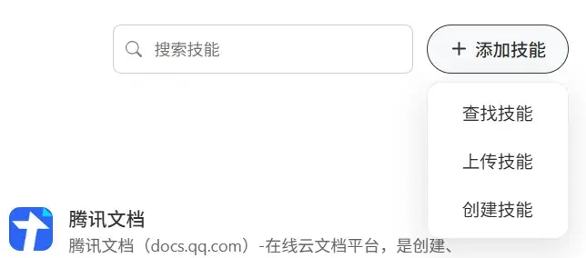
补全执行流程，并加入真实资料来源
【保险顾问版】 执行流程：读取我的个人画像和工作规则；读取《个人表达风格说明书》；读取项目资料库中的个人定位和表达样本；读取目标客户、主题和可引用资料；可以读取得到录音卡整理出的客户沟通记录、学习资料和课程笔记；信息不足时提出不超过3个问题；先输出3个内容角度，等我选择后生成120至180字正式文案；说明资料依据；做销售感、夸张表达和个人风格自检。 输出要求：自然、专业、生活化、克制。不承诺收益，不制造焦虑，不虚构案例。客户录音和沟通记录必须先获得授权，并完成匿名化整理。 【通用版】 执行流程：读取我的个人画像和工作规则；读取《个人表达风格说明书》；读取项目资料库中的个人定位和表达样本；读取目标读者、主题和可引用资料；可以读取录音卡、学习资料、会议纪要和课程笔记；信息不足时提出不超过3个问题；先输出3个内容角度，等我选择后生成120至180字内容初稿；说明资料依据；做夸张表达、模板感和个人风格自检。 输出要求：自然、清楚、具体、有个人表达。不虚构经历，不夸张，不写成广告。
【保险顾问版】 写朋友圈： 业务场景=朋友圈内容 主题=为什么很多人开始关注养老现金流 目标客户=35至50岁的家庭客户 表达目标=引发思考，不直接销售 可引用资料=个人介绍、朋友圈样本、目标客户画像、《个人表达风格说明书》、得到录音卡整理的学习笔记 【通用版】 写内容： 使用场景=社群内容或朋友圈内容 主题=我最近学到的一个有用方法 目标读者=刚开始接触这个主题的朋友或同事 表达目标=分享启发，不制造压力 可引用资料=个人介绍、过往内容样本、目标读者画像、《个人表达风格说明书》、录音卡或学习笔记
【保险顾问版】 请基于“我的专属朋友圈文案助手 V1”创建 V2。新增规则：生成前先判断内容属于客户故事、观点教育还是服务记录；默认不使用感叹号；不使用“你一定要”“必须重视”等命令式表达；结尾不默认添加私信我；输出后说明参考资料；使用录音卡或客户沟通记录时必须确认已经匿名化；资料不足先提问，不硬写。 【通用版】 请基于“我的专属内容表达助手 V1”创建 V2。新增规则：生成前先判断内容属于个人经验、观点分享还是实用提醒；默认不使用夸张语气；不使用命令式表达；结尾不强行引导私信或购买；输出后说明参考资料；使用录音卡或他人沟通记录时必须确认已经脱敏；资料不足先提问，不硬写。
Skill 会用，长期陪跑营帮你省时间
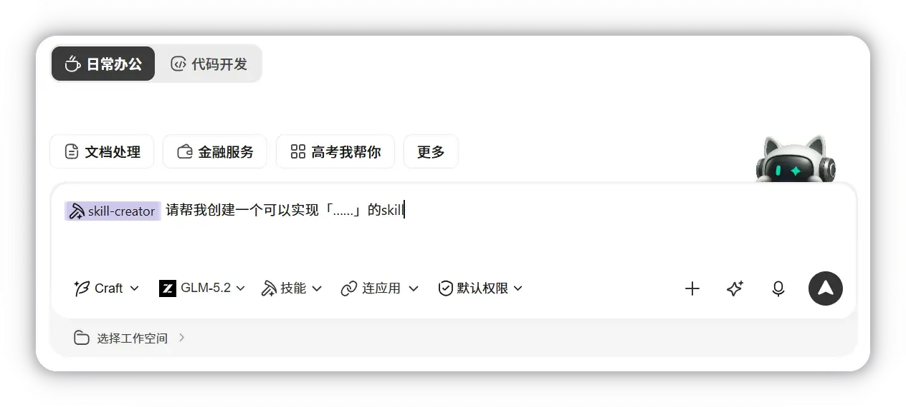
学员逐项确认这8件事
把一次沟通变成个人知识资产
【保险顾问版】 请根据今天这段客户沟通，帮我整理成知识库记录： 1. 客户真实关注点 2. 已确认事实 3. 仍需验证的假设 4. 下一次定联目标 5. 建议微信表达 6. 这次沟通有效或无效的表达 7. 值得沉淀到 Skill 的规则 请最后输出：《客户A_定联复盘_日期.md》的正文内容。不要包含客户真实姓名、电话、地址和保单号。 --- 【通用版】 请根据今天这段沟通或学习记录，帮我整理成知识库记录： 1. 对方或这件事的真实关注点 2. 已确认事实 3. 仍需验证的假设 4. 下一次跟进目标 5. 建议沟通表达 6. 这次沟通有效或无效的表达 7. 值得沉淀到模板或 Skill 的规则 请最后输出：《跟进复盘_日期.md》的正文内容。不要包含他人真实姓名、电话、地址和任何敏感信息。
课后3天照着做
从会下任务，到团队工作流
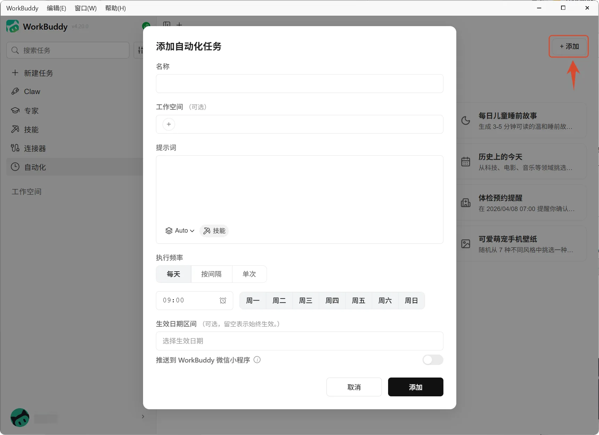
今天建立的是第一间 AI 办公室
接下来真正有价值的部分，是把更多高频业务场景逐个跑通，把有效流程封装成 Skill，再通过持续测试和作业反馈不断更新。